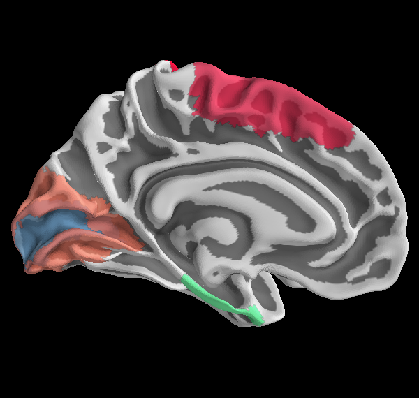

Using PySurfer you can plot Freesurfer cortical labels on the surface with a large amount of control over the visual representation.
Python source code: plot_labels.py
print __doc__
import os
from surfer import Brain
subject_id = "fsaverage"
hemi = "lh"
surf = "smoothwm"
brain = Brain(subject_id, hemi, surf)
# If the label lives in the normal place in the subjects directory,
# you can plot it by just using the name
brain.add_label("BA1")
# Some labels have an associated scalar value at each ID in the label.
# For example, they may be probabilistically defined. You can threshold
# what vertices show up in the label using this scalar data
brain.add_label("BA1", color="blue", scalar_thresh=.5)
# Or you can give a path to a label in an arbitrary location
subj_dir = os.environ["SUBJECTS_DIR"]
label_file = os.path.join(subj_dir, subject_id,
"label", "%s.MT.label" % hemi)
brain.add_label(label_file)
# By default the label is 'filled-in', but you can
# plot just the label boundaries
brain.add_label("BA44", borders=True)
# You can also control the opacity of the label color
brain.add_label("BA6", alpha=.7)
# Finally, you can plot the label in any color you want.
brain.show_view("medial")
# Use any valid matplotlib color.
brain.add_label("V1", color="steelblue", alpha=.6)
brain.add_label("V2", color="#FF6347", alpha=.6)
brain.add_label("entorhinal", color=(.2, 1, .5), alpha=.6)